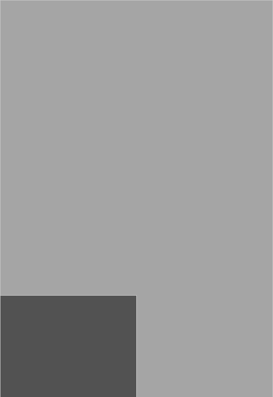
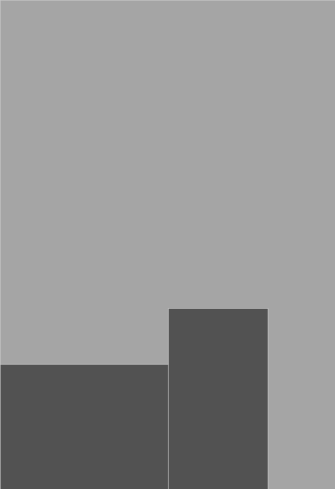
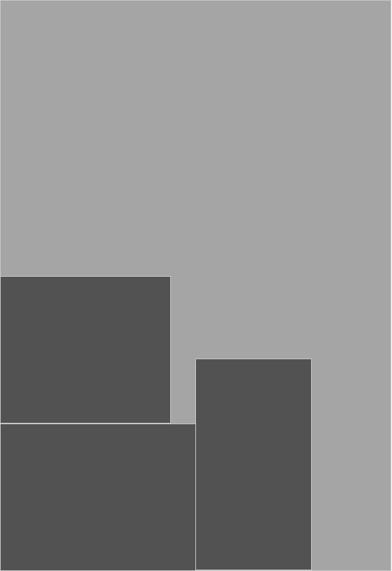
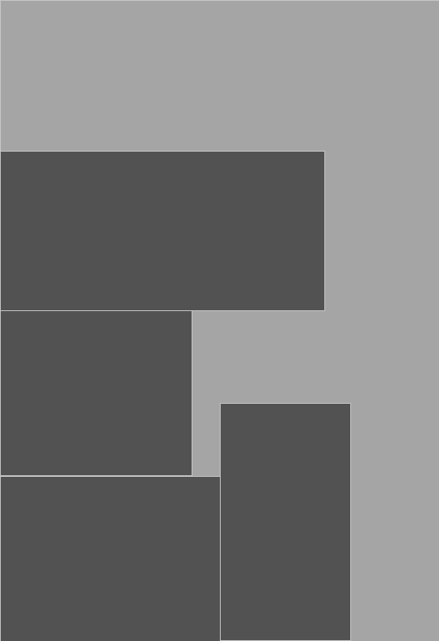
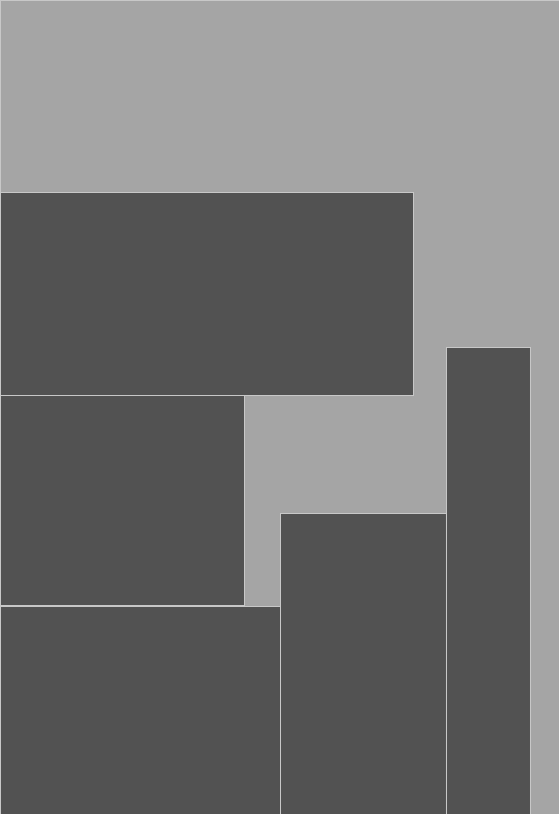
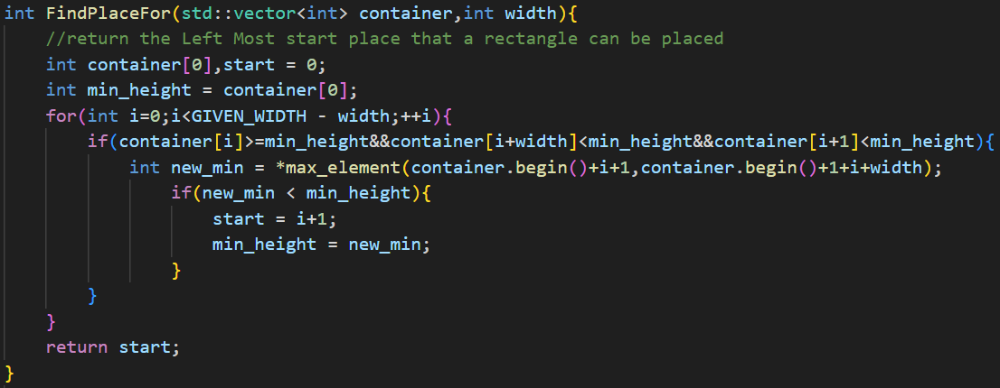

## Texture Packing ### Overall Preview 1. Problem Introduction 2. Solution Attempt 3. Testing Result 4. Complexity Analysis <!--s--> ### 1. Problem Introduction ```Texture Packing is to pack multiple rectangle shaped textures into one large texture. The resulting texture must have a given width and a minimum height.``` <!--v--> ### 1.1 What is the Nature of the Problem ```The Nature of this problem is How to fill a Rectangle box with given samll rectangles. And this is the two-dimensional case of Bin Packing``` <!--v--> <div class="r-stack"> <p></p> <p></p> <p></p> <p></p> <p></p> </div> <!--s--> ### Our Solutions ```struct we will use ``` ```cpp sturct Rectangle{ int length; int width; }//we make sure that length is always longer than width; struct Container{ int array[GIVENWIDTH]; } ``` <!--v--> ### 1. Just place it in order 1. Recive rectangle 2. put it into container ```cpp[1|2|3|4|7-9|4|5|6|11] Contaner C;//Construct a container to hold a rectangle, with an initial height of 0. Rectangle R;//Construct a rectangle for assignment. while(true){//The program will continue to run until the output is finished. R = GiveARectangle();//Receive a rectangle from input. if(R.IsNull()){//End of input. break; }else{ PlaceRectangle(R,C);//Put the rectangle into the container and calculate the height of the container. } } std::cout<<C.CalculateHeight()<<std::endl;//Output the answer. ``` <!--v--> ### 2. Sort the rectangles in advance <!--v--> ### 2.1 Sort the rectangles by length 1. First sort the rectangles by length, 2. Insert them in the sorted order. ```cpp[1-2|3|4|5-7|8] Container C;//Construct a container to hold a rectangle, with an initial height of 0. std::vector<Rectangle> Recs;//This vector is used to contain all rectangles InputRectangles(Recs);//Input all rectangles into this vector SortByLength(Recs);//Sort the rectangles in vector by length for(Rectangle R:Recs){ PlaceRectangle(R,C);//Put the rectangle into the container and calculate the height of the container. } std::cout<<C.CalculateHeight()<<std::endl;//Output the answer; ``` <!--v--> ### 2.2 sort the rectangle by width 1. First sort the rectangles by width, 2. Insert them in the sorted order. ```cpp[1-2|3|4|5-7|8] Container C;//Construct a container to hold a rectangle, with an initial height of 0. std::vector<Rectangle> Recs;//This vector is used to contain all rectangles InputRectangles(Recs);//Input all rectangles into this vector SortByWidth(Recs);//Sort the rectangles in vector by width for(Rectangle R:Recs){ PlaceRectangle(R,C);//Put the rectangle into the container and calculate the height of the container. } std::cout<<C.CalculateHeight()<<std::endl;//Output the answer; ``` <!--v--> ### How does the function work - void PlaceRectangles(Rectangle R,Container C) - We regard the width of the rectangle as a window that moves from left to right within the Container.Each time the window is moved by a unit length, it is only necessary to determine whether each movement will produce a new minimum maximum height. - void SortByLength(std::vector<Rectangle> Recs)&void SortByWidth(std::vector<Rectangle> Recs) <!--v--> void PlaceRectangles(); ```cpp[2] void PlaceRectangles(Rectangle R,Container C){ start = FindPlaceFor(R,C);//find the place to hold R; set(start,start+R.width,R.length);//all height between start and end index will add the length of rectangle } ``` <!-- <p></p> --> ```cpp[2-3|4|5-7|8-10|13] int FindPlaceFor(R,C){ int MinHeight = C[0],Start = 0; //MinHeight represents the minimum value of the maximum height of all sliding windows for(int i=0;i<GIVENWIDTH-R.width;++i){ if(Check(C,i,R.width)){ //if ith element is about to disappear from the sliding window is equal to the current MinHeight, //and the element((i+R.width)th) newly added to the sliding window is smaller than MinHeight int NewMin = Update(MinHeight); start = i+1; MinHeight = NewMin; } } return Start; } ``` <!--v--> void SortByLength(); ```cpp void SortByLength(std::vector<Rectangle> Recs){ std::sort(Recs.begin(),Recs.end(),[](const Rectangle& a,const Rectangle& b){ return a.length > b.length; })//Use the sort of the C++ standard library and the lambda function for sorting } ``` <!--v--> ### 3. Next Fit 1. Recive a rectangle 2. Check if previous container can hold it. 3. If precious container have enough space for the rectangle, put it into the container. Otherwise, calculate the Height of previous container and clean the container. <!--v--> ```cpp int Container = 0; ``` <!--v--> ### 4. First Fit 1. Recive a rectangle 2. Find a container can hold the rectangle 3. If find a container, we put the rectangle into the container.Otherwise, we create a new container and put the rectangle into the new container <!--v--> ```cpp std::vector<int> ContainerArray;//every element represent the loading width of the container Rectangle R;//To receive input rectangle while(InputRectangle(R)){ bool NeedNewContainer = True; for(auto Container:ContainerArray){ if(HasPlace(Container,R)){ //if we find a place to hold the container, we will directly put it into container. PlaceRectangle(R,C); NeedNewContainer = False; break; } } if(NeedNewContainer){ //if we can't find a place for the rectangle, we create a new container, and put it into new container ContainerArray.push_back(0); PlaceRectangle(R,C); } } ```